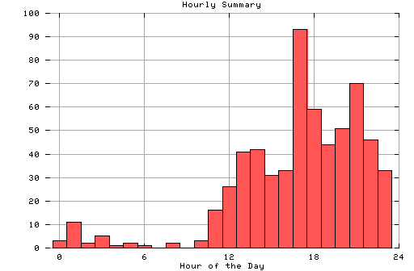

HTTP Server Hourly Summary
Covers: 11/17/95 to 11/20/95 (4 days).
All dates are in local time.
midnite: 3 : 1:00 am: 11 : # 2:00 am: 2 : 3:00 am: 5 : 4:00 am: 1 : 5:00 am: 2 : 6:00 am: 1 : 7:00 am: 0 : 8:00 am: 2 : 9:00 am: 0 : 10:00 am: 3 : 11:00 am: 16 : # noon: 26 : # 1:00 pm: 41 : ## 2:00 pm: 42 : ## 3:00 pm: 31 : ## 4:00 pm: 33 : ## 5:00 pm: 93 : ##### 6:00 pm: 59 : ### 7:00 pm: 44 : ## 8:00 pm: 51 : ### 9:00 pm: 70 : #### 10:00 pm: 46 : ## 11:00 pm: 33 : ##

Statistics generated at Wed Nov 22 13:56:38 MET 1995, (C) Schibsted Nett AS, 1995.